Ordered Magic
How Ordered Magic grew from a one-person inbox to a multi-agent support team without hiring.

About Ordered Magic
Ordered Magic is a Shopify app company based in France, founded and led by Toby Marsden. The company builds and maintains a portfolio of apps that help merchants do real work inside their stores. Uploadkit gives merchants a file uploading layer for personalized and made-to-order products. Instabuy creates instant purchasing flows that reduce friction at the moment a shopper is ready to commit. Hypervisual lets merchants build rich product pages without wrestling with code.
Each app sits inside the Shopify ecosystem, which means the support inbox is technical by default. A typical question involves Liquid, theme code, app blocks, custom CSS, or a merchant trying to bend a feature to fit a workflow Shopify itself does not natively support. That is not a place where scripted answers survive. The merchant on the other end usually needs someone who can read the code, understand the platform, and write back with an actual solution.
By 2020, Ordered Magic was expanding into the U.S. market. The apps were getting heavier traffic, the inbox was getting heavier with it, and Toby was the only person on the support side. He needed a way to scale the support function without becoming a manager of a small support team on top of being the founder, the developer, and the strategist. That is when he started working with xFusion.
"I thought my life was going to become a living hell. It was extraordinary instead."
I was sure outsourcing would mean dropped tickets, the wrong tone, and an exploding workload. None of that happened. The xFusion team grew from one dedicated agent to two full-time and a part-time weekend agent, and the entire way I think about the future of my business has changed.
The team grew from one dedicated agent to two full-time agents plus a part-time weekend agent, with hundreds of new five-star reviews and a meaningful jump in organic ranking on the Shopify app store. What started as a single placement to take the support inbox off Toby's plate became a real, multi-person team carrying the entire support function across three apps and seven-day coverage.
The challenge
Ordered Magic's portfolio was working. Uploadkit, Instabuy, and Hypervisual were getting traction, the U.S. expansion was live, and merchants were finding the apps. The catch was that every merchant question landed in Toby's inbox. He was the founder, the developer, and the support team, all at once.
Three apps with three different feature sets meant three different kinds of tickets. File upload edge cases. Quick-buy flow questions. Visual editor and theme integration issues. Each one needed real technical attention. None of them could be deflected with a templated reply. Toby was reading code, writing answers, and shipping fixes between tickets, and the high-traffic apps demanded coverage seven days a week.
He had thought about hiring. The math did not work. Bringing on a full-time employee meant taking on the recruiting, the onboarding, the payroll, the culture, and the ongoing management, all while personally training the new hire on apps only he fully understood. The cost was not just financial. It was the management overhead that would land on the person already running everything else.
The other obvious option was outsourcing. Toby was openly skeptical of that path. He expected what most founders fear when they outsource support for the first time: dropped tickets, the wrong tone, frustrated customers, and a workload that grew rather than shrank because now there was a remote team to babysit. He was bracing for the worst version of it.
But the status quo was unsustainable. The growth he wanted was on the other side of getting the inbox off his desk, and continuing to handle it himself was already costing him product time he could not get back.
The solution
Toby and xFusion's co-founder Jim Coleman had a candid early conversation about the support side of Ordered Magic. The framing was simple. Toby did not need a placement and a handoff. He needed a partner who would take over the function, including the management of it, so he could stop thinking about support and start thinking about product again.
xFusion placed a dedicated agent with real technical depth: someone fluent in HTML, CSS, JavaScript, and Shopify Liquid, who could actually solve the kind of tickets the apps generated. The agent was vetted through the TraitX Framework and supported by a dedicated account manager on the xFusion side. The first weeks were spent in product immersion across all three apps, learning Uploadkit, Instabuy, and Hypervisual the way Toby knew them, plus the Shopify environment they sit inside.
The team handled tier-one and tier-two technical support, with clear escalation when something genuinely needed Toby's attention. Bugs got reported up to him in a structured way so he could fix and ship rather than triage. Routine merchant questions stayed inside the support team. Toby's role narrowed back down to the work only he could do.
As volume grew, the team grew. One dedicated agent became two full-time agents, then a part-time weekend agent was added to cover the seven-day demands of the high-traffic apps. xFusion handled the staffing on every layer of that growth: recruiting the next person, onboarding them into the apps, integrating them with the existing team, and taking the management load off Toby. He never had to interview a candidate or write a payroll check.
Beyond the inbox, the team took on the work that surrounds support. They organized and surfaced customer feedback so it could feed product decisions. They set up review generation workflows that stayed inside Shopify's terms of service, nudging happy merchants to leave the public reviews that move app store ranking. They tightened up onboarding for new merchants and improved helpdesk efficiency so the same team could carry more volume without losing quality.
What made the partnership work was the same pattern that shows up across xFusion's longest engagements: technical depth on the agent side, end-to-end management on the operations side, and a relationship that kept absorbing more responsibility as Toby found new things he wanted off his plate.
Shoutouts to xFusion's team members from Ordered Magic leadership
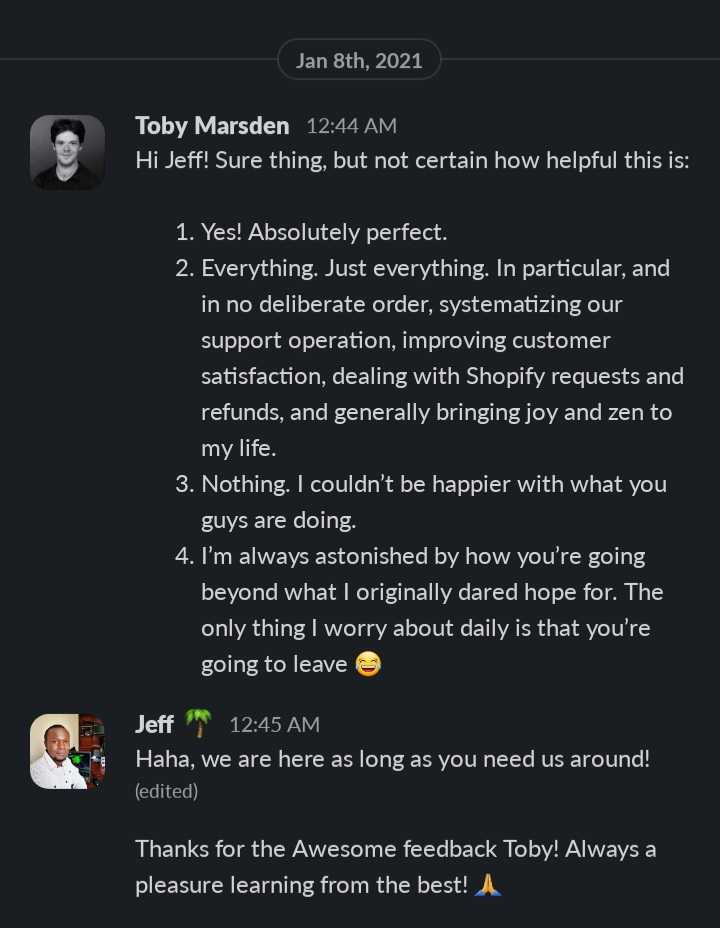
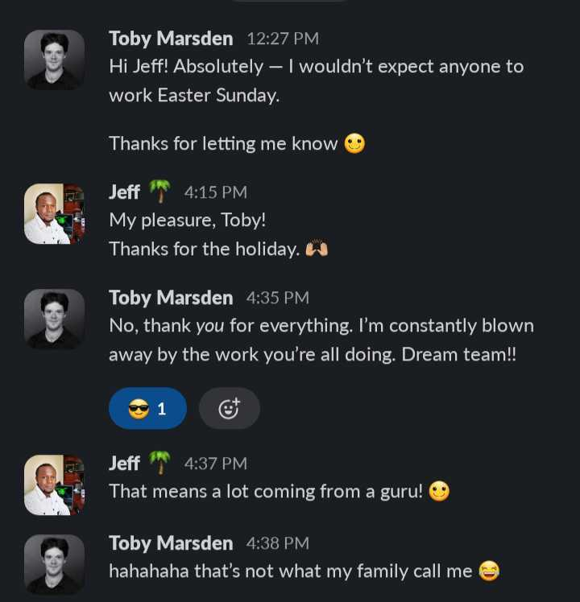
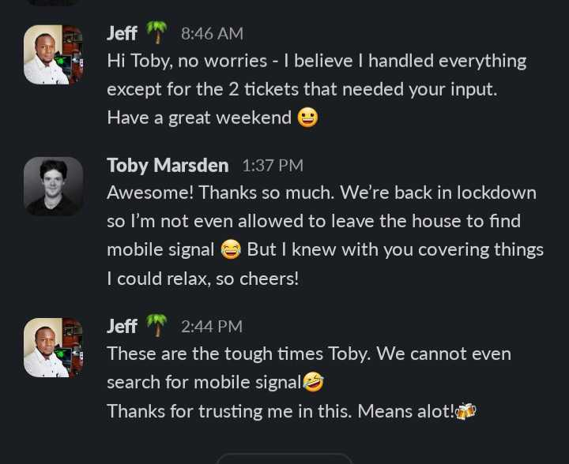
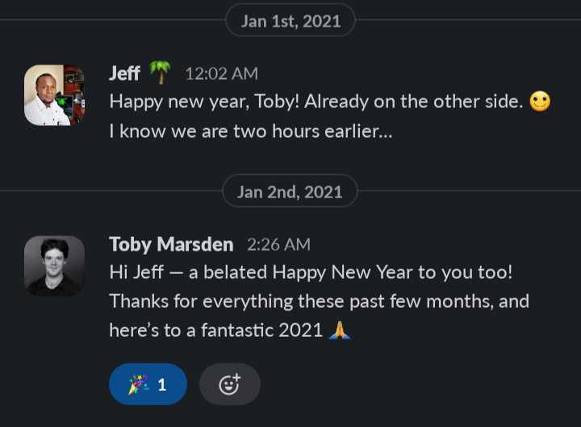
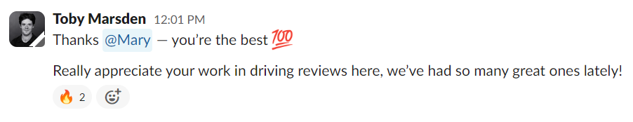
Shoutouts from Ordered Magic customers about xFusion's team members
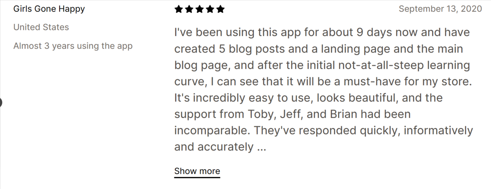
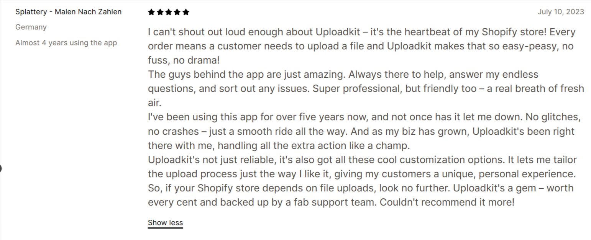
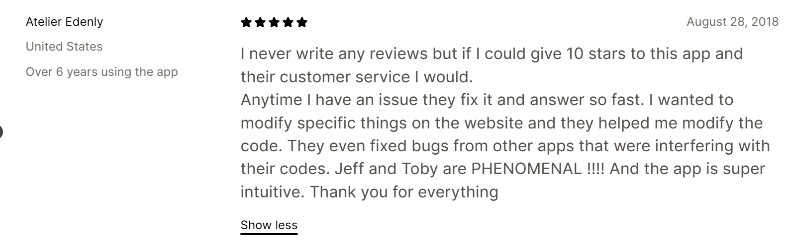
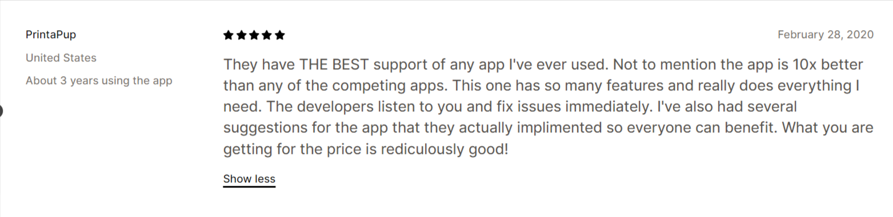
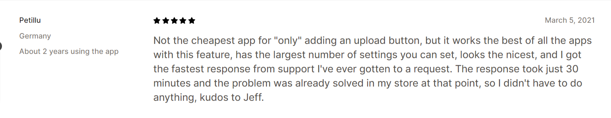
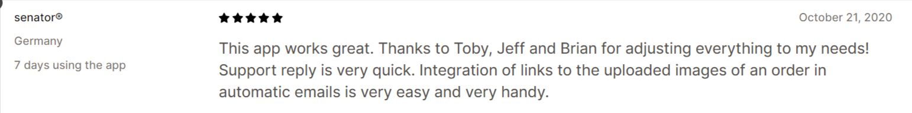
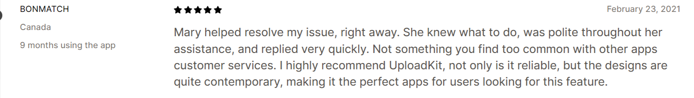
The results
The first result was the one Toby felt immediately. The tickets he had been handling personally stopped landing on him. The agent picked them up, handled them with the right tone, and resolved them at a rate that kept merchants happy. The dropped tickets and exploding workload he had braced for never materialized.
The team scaled in step with the apps. Starting from a single dedicated agent in April 2020, it grew to two full-time agents handling primary support coverage, plus a part-time agent covering the weekend shift. That structure held the seven-day coverage Uploadkit, Instabuy, and Hypervisual needed without putting Toby back on rotation.
The Shopify app store reflected the change. Hundreds of new five-star reviews came in across the three apps, with merchants specifically calling out the support experience. That volume of public five-star feedback moved the apps higher in organic ranking inside the Shopify app store, which fed a healthier acquisition loop on the front end of the business.
The KPIs the team was tracking on response, resolution, and customer satisfaction got hit and then surpassed. The work the team did to organize merchant feedback fed back into Toby's product decisions, so the apps themselves got better at the same time the support around them got better.
The biggest result, in Toby's own framing, was not a number. It was that the way he thought about the future of the business changed. He went into the partnership expecting outsourcing to compromise the brand and the customer experience. He came out of it with a multi-person support team that protected both, ran the function without him, and freed him to spend his hours on the part of the business only he could move forward.
Want to see if we can help you too?
If your customer support is starting to slip, or you are about to lose the one person holding it together, we can help. We will recruit, vet, place, train, and manage a senior, AI-trained support agent for your business. You will work with them for 30 days before paying anything. If you are not happy, you walk away free.
30 minutes. No commitment. No credit card. You'll talk directly with our founding team.